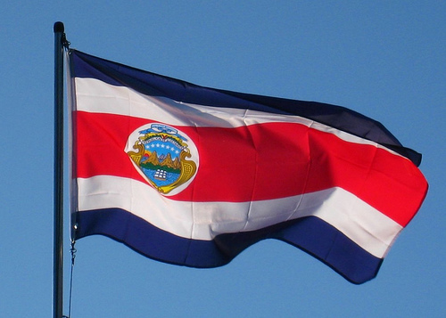
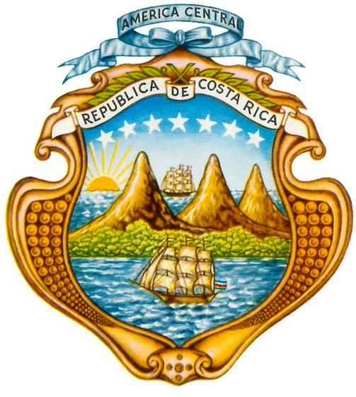
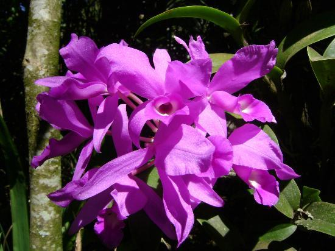
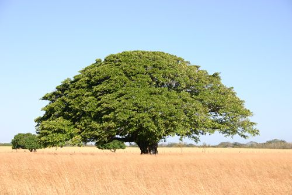
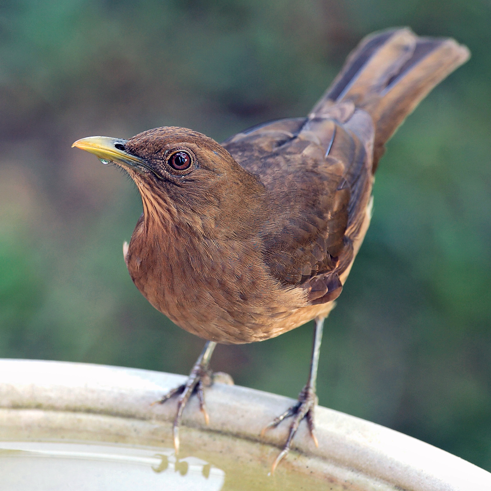

Bandera Nacional
La primera bandera de Costa Rica fue puesta en vigencia en mayo de 1823, cuando la Asamblea Provisional de Costa Rica, la instituyó. Era blanca con una estrella roja en el centro y se mantuvo hasta 1824. La Segunda bandera fue aprobada en agosto de 1823, durante la Asamblea Constituyente de Centroamérica.
Escudo Nacional
El Escudo Nacional representa tres volcanes y un extenso valle entre dos océanos y en cada uno de éstos un buque mercante. En el extremo izquierdo de la línea superior que marca el horizonte habrá un sol naciente. Cerrarán el escudo dos palmas de mirto, unidas por una cinta color blanco con letras doradas la leyenda: "República de Costa Rica".
Flor Nacional
En 1939 en Argentina se fundó un jardín llamado el "Jardín de Paz" y le pidieron a los ticos que enviaran su flor nacional para que luciera con las demás flores de los diferentes países.
Arbol Nacional
El árbol de Guanacaste fue declarado como el árbol nacional de Costa Rica, el 31 de agosto de 1959, durante la administración del Lic. Mario Echandi Jiménez, por decreto No. 7. Fue escogido como homenaje a los guanacastecos, por su anexión al país de 1825
Ave Nacional
El Yigüirro (turdus grayi), fue declarada ave nacional desde el 3 de enero de 1977, como un tributo a su canto potente y melodioso que acompaña la entrada de la época lluviosa. Las razones que motivaron la declaratoria del yigüirro como Ave Nacional, se basa en lo familiar que éste pájaro ha sido para los costarricenses desde hace mucho tiempo.